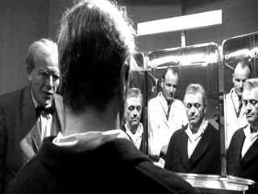

| Seconds
(SE)/B+,B+ |
| Paramount/1966/107/ANA
1.85 |
 |
| It's
a miracle!© Paramount |
To make Rock Hudson look badly at that time in his
career was one of the great achievements of cinema because nobody was
better looking than Rock Hudson. Funny observation from stylist
Frankenheimer. |
|
|
|

Selections from the Feature
Archive include articles on
Akira Kurosawa, Frank
Darabont, Blonde
Bimbos, Hollywood
Street Gangs, or Vietnam:
The Hollywood Pariah, and many more....
Sophia
mi Amore
Sophia mi Amore: That's what I thought the first time I saw one of
the screen's sexiest women in Boy on a Dolphin. Maybe not in those
words, but you get the idea. For a look a Sophia's career from one
perspective, click on her image. Includes a selection of posters from
her movies.
 
ISF Monitor
Calibrations in the Tristate New York area. Lots of hardware info
and frequent hardware peaks from video expert Kevin Miller. They may be
judgmental, but that's the point, isn't it. Lots of DVD reviews plus
news and more.


Mystery writer Fred Hunter digs into classic
films on DVD. Check out his insightful reviews at The
Classics on DVD.

DVD
Demystified makes it all clear. The official Internet DVD
FAQ for the rec.video.dvd Usenet newsgroups.
 Brad
Lang continues to add more interesting material to the extensive
collection at Classic
Movies. Everything from actors and actress to your
favorite directors is linked at the site. Brad
Lang continues to add more interesting material to the extensive
collection at Classic
Movies. Everything from actors and actress to your
favorite directors is linked at the site.

News, information, features about current
films in theaters and in the pipeline. Easy to use interface.

|